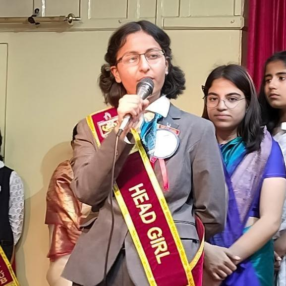
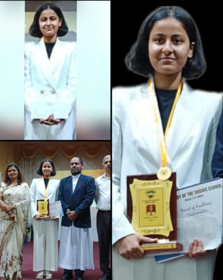
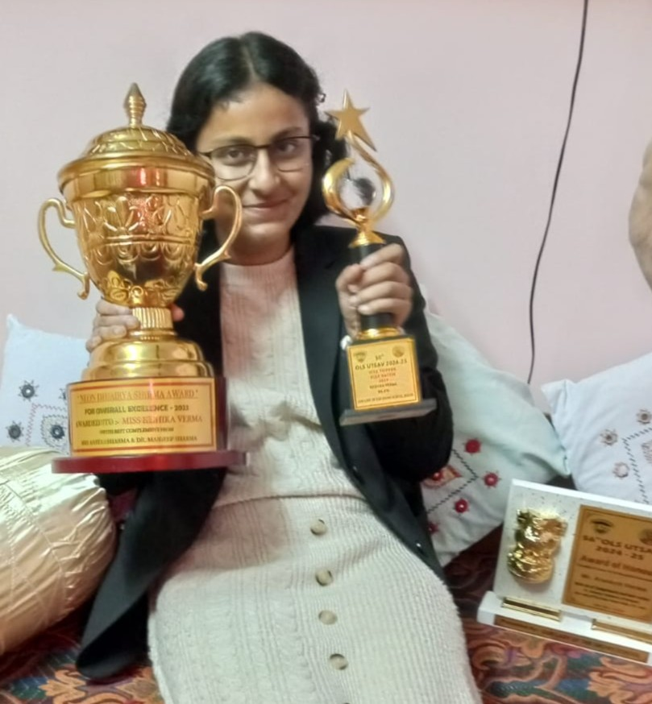
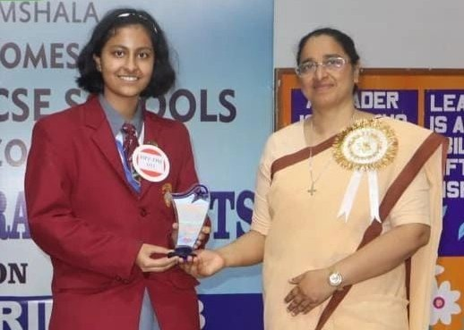

GROWTH • MILESTONES • EXPERIENCES
Journey
A structured look at the path that shaped me through leadership, academics, awards, recognition, and experiences beyond the classroom.
This page is the doorway into the different chapters of my journey. Instead of making one long list, I have divided it into clear sections so each part can lead to its own fuller page.
Explore my journey
Each section highlights a different side of my growth. Click any card to open the detailed page.

Leadership
Leading with responsibility
From Vice Head Girl and Head Girl to Discipline Executive, hosting large events, and taking responsibility in student-led spaces, leadership has been one of the strongest parts of my journey.
Open Leadership →
Academics
Learning, effort and growth
Academic growth has been a major part of my path, from classroom achievements and board results to curiosity-driven learning in science, technology, and writing.
Open Academics →
Awards & Recognition
Milestones along the way
Awards, speaking competitions, school honours, selections, and recognitions became reminders of effort, consistency, and the courage to keep showing up.
Open Achievements →
Extracurriculars & Experiences
Beyond the classroom
Public speaking, literary events, dance, hosting, volunteering, science exhibitions, bootcamps, and creative projects helped me become more expressive, confident, and open.
Open Experiences →A quick timeline
Built confidence through academics, creativity, dance, reading, writing, and early curiosity.
Began writing my novel, explored technology, served in leadership roles, and grew through competitions.
Moved to Chandigarh, explored internships, MUN, public speaking, peer education, and IIT Delhi bootcamp.
Published my book, launched Digital Disha, built KeyZen, participated in VBYLD, and completed school.
Still unfolding.
This page will keep growing as I add fuller pages for leadership, academics, achievements, and experiences.
Read My Full Story →